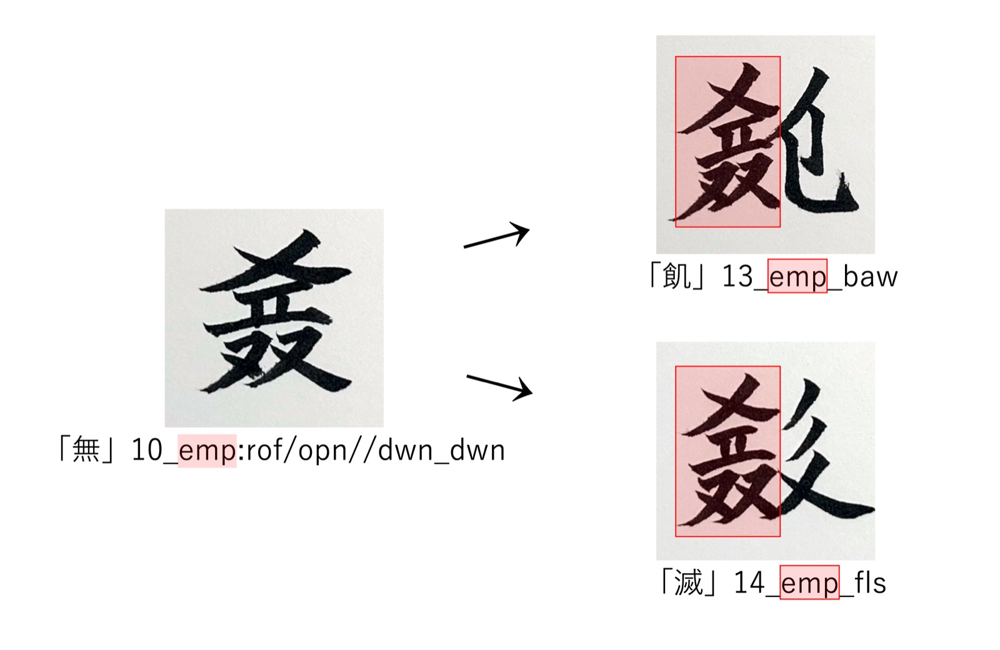
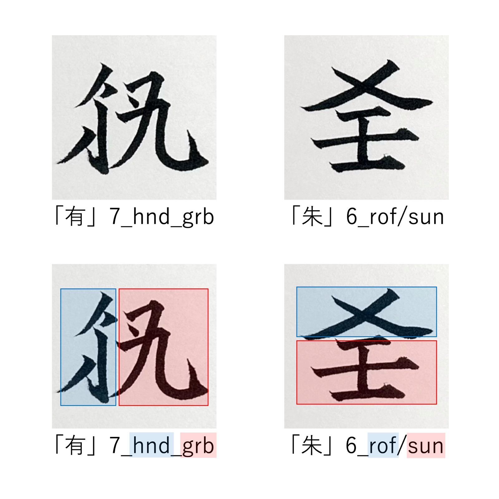
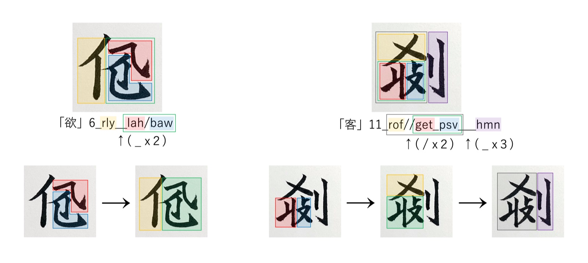
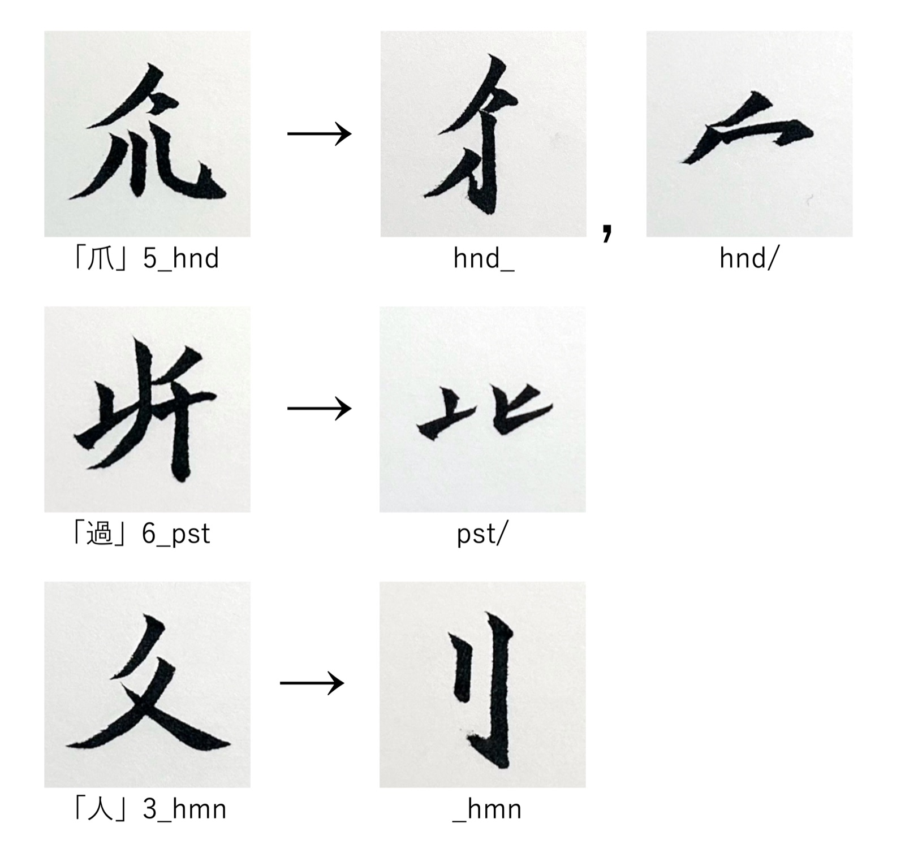

Ruwish has no pronunciation. Every word is written only with ideographic characters called the Ruwish script.
Like Chinese characters, Ruwish characters are built by combining several components. This page explains what components Ruwish characters are made of, and how to read RSDcode, a way of writing down how a character is put together. It can also serve as a guide to reading the ZpDIC Ruwish Dictionary.
1. The kanji in dictionary headwords
In the ZpDIC Ruwish Dictionary, each headword is shown in ordinary kanji alongside the Ruwish character. These are transcription kanji (対応漢字): each Ruwish character has been assigned one kanji. Ruwish characters cannot be displayed without a special font, and they cannot be typed directly on a keyboard. So that the words can be read, typed and searched in any environment, they are transcribed with kanji.
Transcription kanji are only labels for writing the characters down. I try to choose kanji with a meaning as close as possible, but the meaning of a transcription kanji does not necessarily match the meaning of the Ruwish character. Please read a character’s meaning from the translations in the dictionary, and from the way its components are put together, as explained below.
2. Types of Ruwish characters
Ruwish characters are classified into four types according to their structure.
Simple characters単字
The most basic unit, which stands on its own as a character.
Compound characters合字
Characters made by combining several components. Most Ruwish characters are compound characters.
捕 (to catch) places “palm” and “grab” side by side.
滿 (full moon) stacks “fat” on top of “moon”.
Fused characters結字
Like compound characters, these are made by combining components, but the combination appears inside many other characters. Through repeated use, it has come to work as a single component, just like a simple character.
For example, 無 (empty) is made of several components, and this whole unit is used as it is inside 飢 (to starve) and 滅 (to perish).

Bound components零字
Components that cannot stand on their own as characters, and appear only when combined with other components.
For example, the upper part of 朱 is a bound component meaning “roof”, with the simple character “sun” placed beneath it.
Bound components are not listed in the ZpDIC Ruwish Dictionary. The dictionary lists words, but bound components never become words on their own. Only simple characters, compound characters and fused characters are used as words.
3. Words made of several characters: compound words and idioms
Some Ruwish words are made by putting two or more characters in a row.
Compound words熟語
Two or more characters that work together as a whole, like a single noun or a single verb.
Idiomsイディオム
A fixed expression of two or more characters that are often used together, but in which each character keeps its own function.
“cannot bear”
In 不可保, 不 works as the negation, 可 as “can”, and 保 as “keep”, each separately. The three do not merge into a single verb.
However, the boundary between compound words and idioms is not clear at present. Since Ruwish words never change their form, there is no clue in the form itself to decide “this is where one word ends” or “this is a verb”. For this reason, some sequences that are hard to classify, or hard to fit into a single part of speech, are listed as idioms. Please treat the “compound word” and “idiom” tags in the dictionary only as a rough guide.
In the ZpDIC Ruwish Dictionary, a tag above each headword shows which type it belongs to: 単字 (simple character), 合字 (compound character), 結字 (fused character), 熟語 (compound word) or イディオム (idiom).
4. How to read RSDcode
RSDcode (Ruwish Structural Description code) writes down how a Ruwish character is put together, using only letters, numbers and symbols (ASCII). Every word in the ZpDIC Ruwish Dictionary has its RSDcode. Even when the character itself cannot be displayed, reading the RSDcode tells you which components it is made of and how they are combined.
The basic form
An RSDcode looks like this:
- The first number is the stroke count
- Each group of three letters stands for one component. The letters come from English words (
plm= palm,grb= grab,mon= moon, and so on) - The symbol between two components shows how they are combined
| Symbol | Meaning |
|---|---|
_ | side by side, left and right (like the kanji 明, with 日 on the left and 月 on the right) |
/ | stacked, top and bottom (like the kanji 字, with 宀 on top and 子 below) |
For example, 捕, the compound character shown above, is 7_plm_grb: “palm” (plm) and “grab” (grb) side by side. 滿 is 8_fat/mon: “fat” (fat) stacked on top of “moon” (mon).
The figure below shows the shapes and RSDcodes of 有 (to have) 7_hnd_grb and 朱 (vermilion) 6_rof/sun, color-coded by component.

Repeating symbols
In characters with three or more components, symbols are doubled or tripled. Join the parts with the fewest symbols first, and the shape of the character falls into place.
欲 (to want) 6_rly__lah/baw:
lah / bawOne symbol: stacklahon top ofbawrly __ (1)Two symbols: putrlyand unit 1 side by side
客 (guest) 11_rof//get_psv___hmn:
get _ psvOne symbol: side by siderof // (1)Two symbols: put unit 1 underrof(2) ___ hmnThree symbols: put unit 2 andhmnside by side

Components change shape
The same component may take a different shape when written on its own and when combined with other components, just as the kanji 手 (hand) becomes 扌 when it stands on the left side of another kanji.
When the shape changes, the stroke count may change too. How it changes depends on where and how the component is combined. As a result, the stroke count of a compound character does not always equal the sum of its components’ stroke counts.
| Character | RSDcode | Sum of components | Actual strokes |
|---|---|---|---|
| 捕 | 7_plm_grb | 4 + 3 = 7 | 7 |
| 有 | 7_hnd_grb | 5 + 3 = 8 | 7 |
Both have the same grb on the right, but in 有 the shape of hnd on the left changes, and it loses one stroke.
However, even when the shape or stroke count changes, the meaning of the component stays the same. RSDcode records components, not shapes, so the code shows that a component with a changed shape is still the same component.
The figure below compares components written on their own and in combination. hnd takes one shape on the left side (hnd_) and another on top (hnd/).

Writing fused characters: :
Fused characters are written with a colon :. Before the colon is the name of the fused character, and after it, how its contents are put together.
Once a fused character has a name, it can be written with the name alone inside other characters. 飢 is 13_emp_baw, and 滅 is 14_emp_fls. Both codes show that the character has the unit of 無 (emp) on its left side.
Components without a name yet: ~
Some RSDcodes contain ~. This is a placeholder for a component that has not yet been given a three-letter name.
Example: 橋 12_hnd__~/grs
RSDcode for compound words and idioms
For compound words and idioms, the RSDcodes of the characters are joined with commas ,, in the order the characters are written.
Example: 檎果 12_frt_red,6_frt
5. Finding characters by component in the dictionary
With RSDcode, you can search the ZpDIC Ruwish Dictionary by component (similar to looking up kanji by radical).
- Set the search target to “full text” (全文)
- Set the matching method to “partial” (部分)
- Enter the letters of a component in the search box. For example, entering
flslists the characters that contain theflscomponent
Entering a symbol too, as in fls_, narrows the results to characters with fls on the left side.